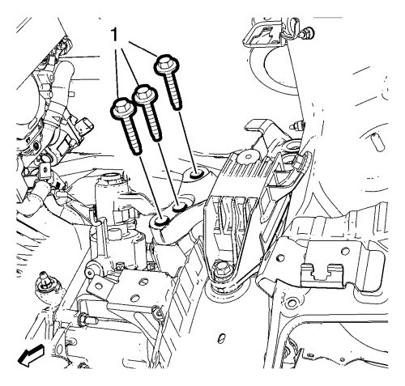
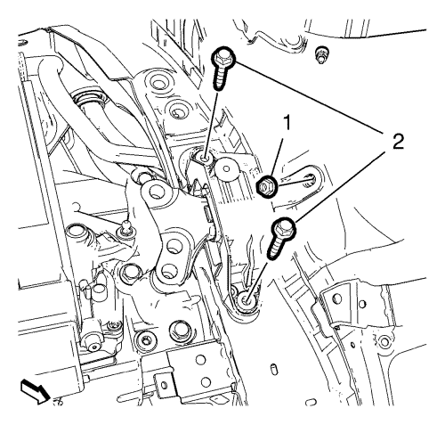

Sustitución del alojamiento de la transmisión - Lateral izquierdo
Herramientas especiales
CH-49290 Dispositivo de soporte del motor
Si desea informarse sobre herramientas regionales equivalentes, consultar Herramientas especiales .
Procedimiento de desmontaje
- Desmonte la bandeja de la batería. Consultar Sustitución de la bandeja de la batería .
- Elevar el vehículo y soportarlo de manera segura. Consultar Elevación del vehículo con un gato .
- Instale el dispositivo de soporte del motor CH-49290. Para la instalación, utilice el manual de montaje que se adjunta.
- Bajar el vehículo.

- Desmonte los 3 pernos (1) del alojamiento de la caja de cambios.

- Desmonte los 2 pernos del alojamiento de la caja de cambios (2) y la tuerca del alojamiento de la caja de cambios (1).

- Retire el montaje de la caja de cambios (1).
Procedimiento de montaje
- Instale el montaje de la caja de cambios (1).
Precaución: Consulte Precaución con las fijaciones en la sección Prólogo
- Monte los 2 pernos del montaje de la caja de cambios (2) y apriételos hasta 62 N·m (46 lib. pie).
- Monte la tuerca del alojamiento de la caja de cambios (1) y apriétela hasta 62 N·m (46 lib. pie).
- Monte los 3 pernos del alojamiento de la caja de cambios (1) y apriételos a 50 N·m (37 lib. pie) + 60°-75°.
- Elevar el vehículo
- Desmonte el dispositivo de soporte del motor CH-49290.
- Bajar el vehículo.
- Monte la bandeja de la batería. Consultar Sustitución de la bandeja de la batería .
| © Copyright Chevrolet. Reservados todos los derechos |